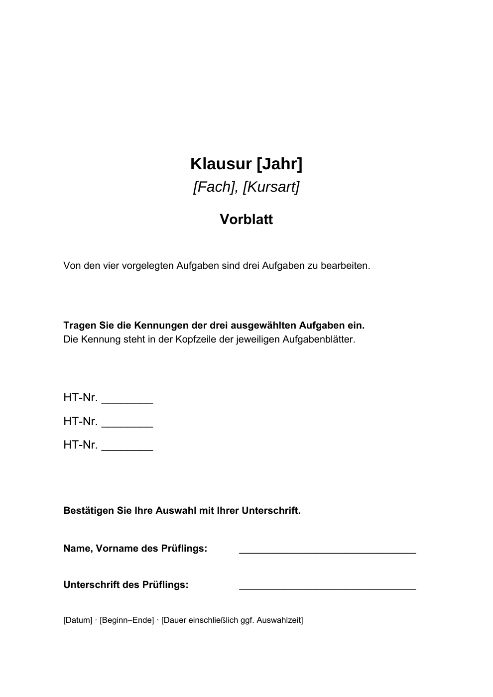

←
1 · Vorblatt
2 · Aufgabenblatt
3 · Materialien
4 · Lehrkraft: Aufgabenstellung
5 · Lehrkraft: Quellen
6 · Erwartungshorizont
7 · Bewertungsbogen
8 · Gesamtnote
9 · Notenfindung
→
PDF herunterladen

Seitenansicht der PDF. Die heruntergeladene PDF enthält ausfüllbare Felder.